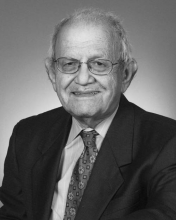

Please note: the AAS Obituaries are temporarily being hosted on this website while their full content is being ingested into the PubPub publishing platform newly adopted by the Bulletin of the American Astronomical Society. When the migration is complete, your existing links will take you to the final, migrated content. Contact peter.williams@aas.org with any questions.
Herbert Gursky (1930-2006)
Dr. Herbert Gursky, Acting Associate Director of Research for the Naval Research Laboratory's (NRL's) Systems Directorate, and formerly Superintendent of the Space Science Division and Chief Scientist of the E. O. Hulburt Center for Space Research. Dr. Gursky died following a long illness on late Friday afternoon, December 1, 2006. Dr. Gursky was a great friend, valued colleague, and distinguished researcher who will be missed greatly.
Dr. Gursky was born in Bronx, New York, on May 27, 1930. He was educated in secondary schools in Miami, Florida, and received a Bachelor's Degree from the University of Florida in 1951. He did graduate work in physics at Vanderbilt University (Master's degree in 1953) and Princeton University (Doctorate degree in 1959). His first professional position was at Columbia University as an instructor in the Physics Department from 1958 to 1961.
In 1961, he joined American Science and Engineering, Inc. (AS&E) in Cambridge, Massachusetts, as a senior scientist and rose to the position of Vice President, Space Research in 1967. In 1973 he joined the Smithsonian Astrophysical Observatory (SAO) as a supervisory astrophysicist. In 1974, Dr. Gursky was appointed Professor in the Practice of Astronomy at Harvard University and in 1976 was named Associate Director of the Center for Astrophysics for the Division of Optical and Infrared Astronomy. In 1981, Dr. Gursky joined NRL as Superintendent of its Space Science Division and Chief Scientist of the E. O. Hulburt Center for Space Research. He moved to the position of Acting Associate Director of Research for NRL's Systems Directorate in 2006.
Dr. Gursky's primary research interests were in the area of X-ray astronomy. He published more than 100 articles in this area and edited two books on the subject. Before arriving at NRL, he was the principal investigator for NASA-sponsored space programs on the Astronomical Netherlands Satellite (ANS) and the High Energy Astrophysics Observatory (HEAO)-1 satellite, and a co-investigator on numerous other rocket and satellite experiments.
At AS&E, Dr. Gursky managed research activities encompassing solar physics and magnetospheric research, and at SAO, he managed programs of ground-based astronomy and infrared astronomy. At SAO, he oversaw the completion of the Multiple Mirror Telescope, a joint program of SAO and the University of Arizona, comprising a 4.5-meter (equivalent) telescope of novel design that is situated at Mount Hopkins in Arizona.
Dr. Gursky's work at NRL involved direction of a broad-ranging research effort involving about fifty Ph.D. scientists conducting investigations in the areas of high-energy astronomy, solar physics, solar terrestrial effects and atmospheric science. NRL is the corporate research laboratory for the Navy and has the responsibility for assuring that future Navy systems take full advantage of all available technology and scientific understandings.
Dr. Gursky had the ability to distill and seize the most important nuggets from any research program and envision its application to a variety of new problems and directions. In numerous areas of atmospheric, solar and space science technology, Dr. Gursky recognized key scientific issues and their potential DoD applications.
In solar physics, he spurred the development of semi-empirical modeling to predict solar storms that has been successfully transitioned to operational systems. He also supported participation in all NASA and other agency Sun-Earth connection orbiting space programs which resulted in a succession of spectacularly successful experiments in solar physics such as the high resolution rocket spectrograph and its flight on the NASA Spacelab 2, the Solar Ultraviolet Spectral Irradiance Monitor (SUSIM) on the NASA Upper Atmosphere Research Satellite, the Bragg crystal spectrometer solar flare experiment on the Japanese Yohkoh spacecraft, and the Large Angle and Spectrometric Coronagraph Experiment (LASCO) and extreme ultraviolet imaging telescope (EIT) on the ESA/NASA Solar and Heliospheric Observatory. These experiments have shed considerable light on how solar activity affects the near-Earth environment with many potential space weather applications.
In high-energy astronomy, Dr. Gursky made many contributions. He provided scientific oversight for the Advanced Research and Global Observation Satellite (ARGOS) Space Test Program spacecraft that contained five NRL instruments: the Unconventional Stellar Aspect (USA) experiment, the Global Imaging Monitor of the Ionosphere (GIMI), the High Resolution Airglow/Aurora Spectroscopy (HIRAAS) experiment, the Extreme Ultraviolet Imaging Photometer (EUVIP), and the Coherent Electromagnetic Radio Tomography (CERTO) instrument.
He continued his interest in X-ray astronomy with the USA experiment, which obtained observations of many celestial sources such as galactic binary X-ray sources and pulsars. Always with an eye toward applications, Dr. Gursky was interested in using X-ray sources, specifically X-ray pulsars, as precise clocks to provide spacecraft with autonomous timing and navigation. Dr. Gursky also supported research in gamma ray astrophysics, such as the development of NRL's Oriented Scintillation Spectrometer Experiment (OSSE) for the NASA Compton Gamma Ray Observatory (CGRO) satellite, and analysis of solar flare gamma ray spectra obtained from the NASA Solar Maximum Mission.
In atmospheric science, Dr. Gursky particularly encouraged practical applications of basic research. He recognized the importance of remote sensing for space weather, which resulted in the development at NRL of operational ultraviolet sensors on Defense Meteorological Satellite Program (DMSP) spacecraft that are now providing environmental data products to the Air Force Space Weather Agency. He initiated a program in middle atmosphere research that has been enormously successful and has spawned numerous experimental and theoretical advances, such as the Middle Atmosphere High Resolution Spectrograph Investigation (MAHRSI) to measure trace constituents in the middle atmosphere such as the hydroxyl radical (OH). Dr. Gursky supported the development of theoretical middle atmosphere models such as the Mountain Wave Forecast Model that was used to predict flight conditions for allied aircraft during operations Southern Watch, Enduring Freedom, and Iraqi Freedom, which has been a boon to stratospheric flight operations over mountainous terrain. He also supported the HIRAAS experiment on ARGOS.
Dr. Gursky provided outstanding leadership in the continued development of the United States space program. Under his stewardship, the NRL Space Science Division substantially expanded its leadership role in understanding the space environment and its effects on military and civilian systems. The Laboratory and the world are now witnessing the newest results of his scientific acumen and sound decision-making as exemplified in the very recent successful completions and launches of these major Space Science Division instruments:
Delivery of GLAST LAT (September 2006): Delivery of the collaborative NRL Large Area Telescope (LAT) for the NASA Gamma Ray Large Area Space Telescope (GLAST) satellite integration; when deployed, GLAST will measure the most energetic processes in the universe — from X-ray bursts, black holes, neutron stars, and solar flares — and has the potential to discover previously unknown relics of the Big Bang;
Launch of SOLAR-B (September 2006): The Japan Aerospace Exploration Agency's Hinode (Japanese for Sunrise, formerly known as SOLAR-B) launched September 23 carrying NRL's collaborative Extreme-ultraviolet Imaging Spectrometer (EIS), which achieved first light on October 28. EIS is now observing emission lines produced by highly ionized elements in the solar coronal and upper transition region of the Sun's atmosphere. Space Science Division scientists expect much exciting science concerning the coupling of solar activity to the near-Earth space environment to be produced by the EIS instrument; and,
Launch of STEREO (October 2006): NASA's Solar Terrestrial Relations Observatory (STEREO) launched 25 October, carrying the collaborative NRL Sun-Earth Connection Coronal and Heliospheric Investigation (SECCHI) instruments suite, which is currently successfully functioning in the pre-commissioning phase. The instruments onboard STEREO's twin spacecraft will make observations to help NRL researchers construct the first-ever three-dimensional views of coronal mass ejections, vital data — in complement with the long-operational NRL-built NASA LASCO — for understanding how the Sun creates space weather
Perhaps Dr. Gursky's most personal research successes were as a member of the group that made the discovery of cosmic X-ray sources in 1961, his work with sounding rockets that culminated in the optical identification of the bright X-ray source Scorpius X1 in 1966, his work on clusters of galaxies and the diffuse X-ray background from the Uhuru Satellite and the discovery of X-ray bursters on the ANS satellite.
Obituary written by: George Doschek (Space Science Division, Naval Research Laboratory), Jill Dahlburg (Space Science Division, Naval Research Laboratory)
BAAS Citation: BAAS, 2007, 39, 1060
SAO/NASA ADS Bibcode: 2007BAAS...39.1060D